Selected Publications
* indicates Equal Contribution; #indicates (Co-)Supervised Students
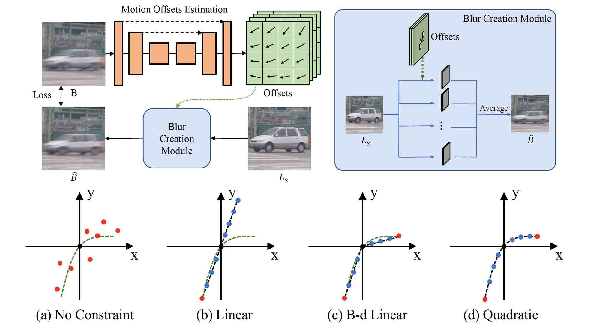
|
Exposure Trajectory Recovery from Motion Blur Youjian Zhang#, Chaoyue Wang, Stephen J. Maybank, and Dacheng Tao IEEE TPAMI 2021 [PDF] [Code] [Video] |
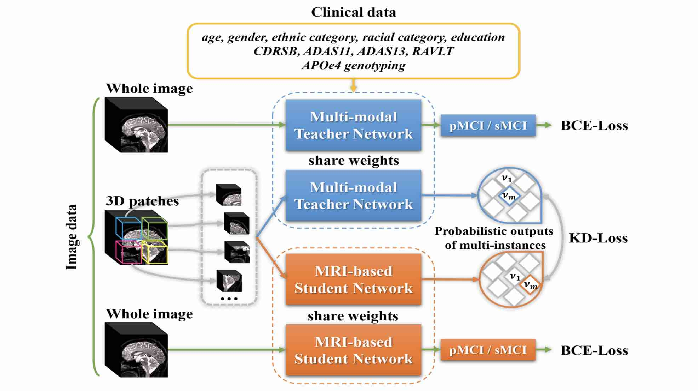
MRI-based Alzheimer's Disease Prediction via Distilling the Knowledge in Multi-modal Data
Hao Guan#, Chaoyue Wang, and Dacheng Tao
NeuroImage 2021 [PDF]
Hao Guan#, Chaoyue Wang, and Dacheng Tao
NeuroImage 2021 [PDF]
|
MRI-based Alzheimer's Disease Prediction via Distilling the Knowledge in Multi-modal Data Hao Guan#, Chaoyue Wang, and Dacheng Tao NeuroImage 2021 [PDF] |
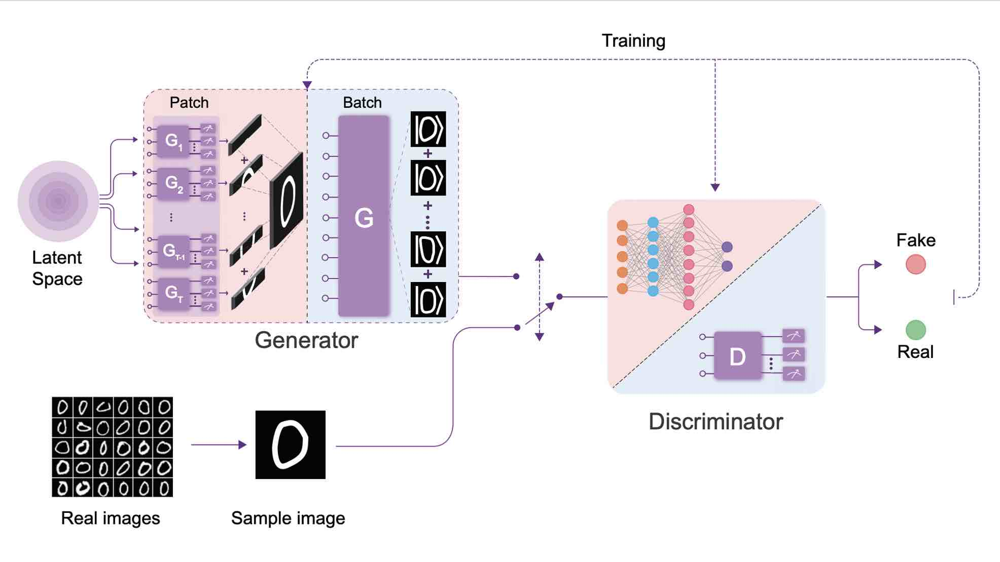
Experimental Quantum Generative Adversarial Networks for Image Generation
He-Liang Huang*, Yuxuan Du*, Ming Gong, Youwei Zhao, Yulin Wu, Chaoyue Wang, Shaowei Li, Futian Liang, Jin Lin, Yu Xu, Rui Yang, Tongliang Liu, Min-Hsiu Hsieh, Hui Deng, Hao Rong, Cheng-Zhi Peng, Chaoyang Lu, Yu-Ao Chen, Dacheng Tao, Xiaobo Zhu, and Jian-Wei Pan
Physical Review Applied 2021 [PDF]
He-Liang Huang*, Yuxuan Du*, Ming Gong, Youwei Zhao, Yulin Wu, Chaoyue Wang, Shaowei Li, Futian Liang, Jin Lin, Yu Xu, Rui Yang, Tongliang Liu, Min-Hsiu Hsieh, Hui Deng, Hao Rong, Cheng-Zhi Peng, Chaoyang Lu, Yu-Ao Chen, Dacheng Tao, Xiaobo Zhu, and Jian-Wei Pan
Physical Review Applied 2021 [PDF]
|
Experimental Quantum Generative Adversarial Networks for Image Generation He-Liang Huang*, Yuxuan Du*, Ming Gong, Youwei Zhao, Yulin Wu, Chaoyue Wang, Shaowei Li, Futian Liang, Jin Lin, Yu Xu, Rui Yang, Tongliang Liu, Min-Hsiu Hsieh, Hui Deng, Hao Rong, Cheng-Zhi Peng, Chaoyang Lu, Yu-Ao Chen, Dacheng Tao, Xiaobo Zhu, and Jian-Wei Pan Physical Review Applied 2021 [PDF] |
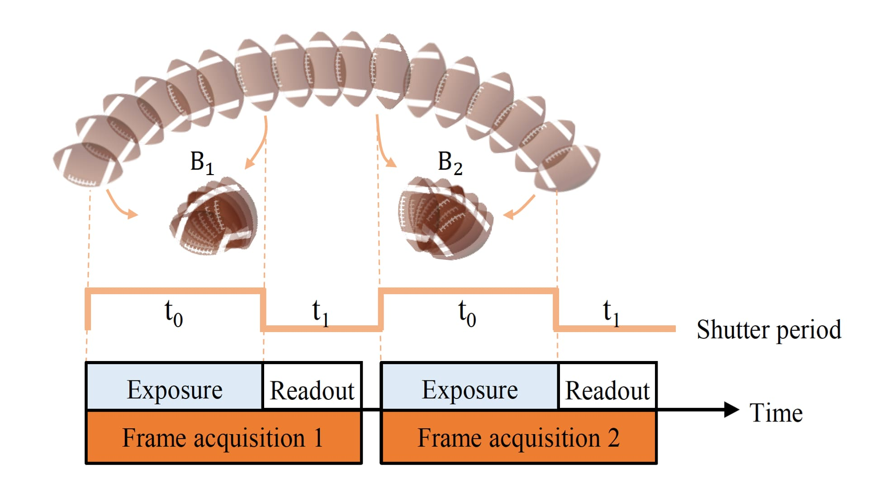
|
Video Frame Interpolation without Temporal Priors Youjian Zhang*#, Chaoyue Wang*, and Dacheng Tao NeurIPS 2020 [PDF] [Code] [Video] |
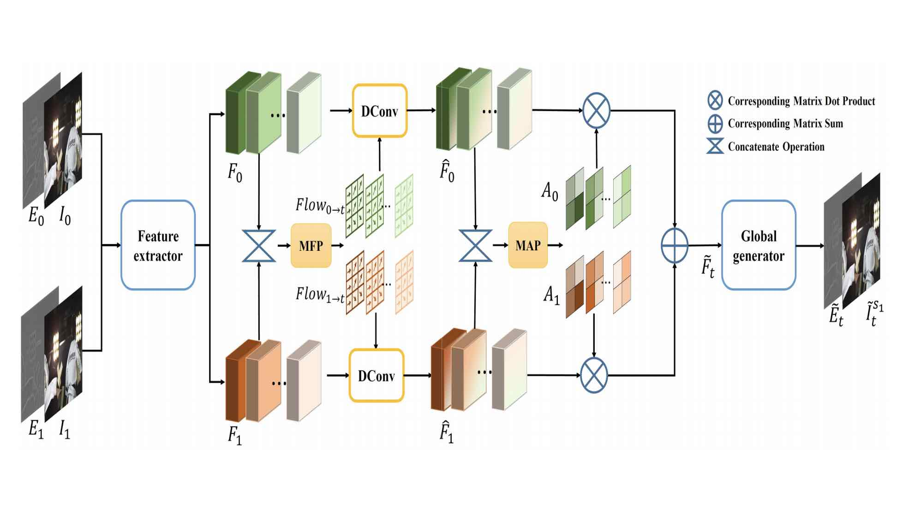
|
FeatureFlow: Robust Video Interpolation via Structure-to-texture Generation Shurui Gui#*, Chaoyue Wang*, Qihua Chen#, and Dacheng Tao CVPR 2020 [PDF] [Code] [Video] |
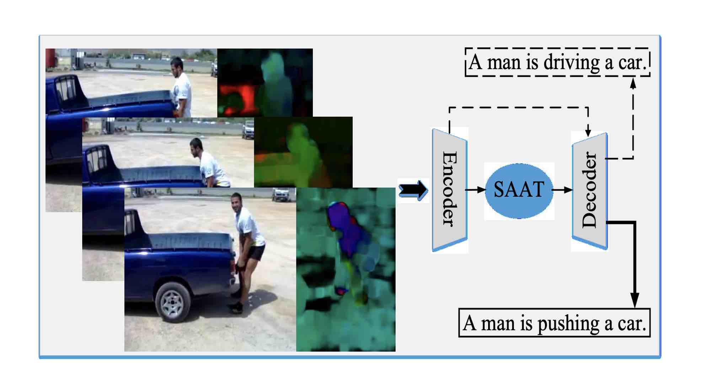
|
Syntax-Aware Action Targeting for Video Captioning Qi Zheng#, Chaoyue Wang, and Dacheng Tao CVPR 2020 [PDF] [Code] |
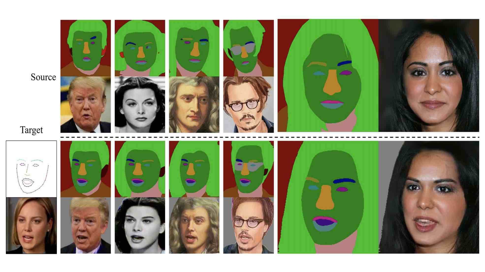
|
PuppeteerGAN: Arbitrary Portrait Animation with Semantic-aware Appearance Transformation Zhuo Chen#, Chaoyue Wang, Bo Yuan, and Dacheng Tao CVPR 2020 [PDF] [Video] |
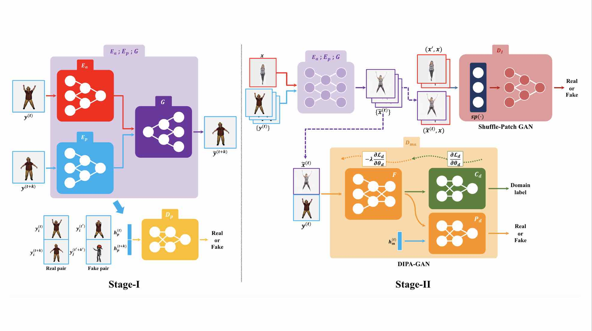
Self-supervised Pose Adaptation for Cross-Domain Image Animation
Chaoyue Wang, Chang Xu, and Dacheng Tao
IEEE TAI 2020 [Paper]
Chaoyue Wang, Chang Xu, and Dacheng Tao
IEEE TAI 2020 [Paper]
|
Self-supervised Pose Adaptation for Cross-Domain Image Animation Chaoyue Wang, Chang Xu, and Dacheng Tao IEEE TAI 2020 [Paper] |

Multistage GAN for Fabric Defect Detection
Juhua Liu*, Chaoyue Wang*, Hai Su, Bo Du, and Dacheng Tao
IEEE TIP 2020 [Paper]
Juhua Liu*, Chaoyue Wang*, Hai Su, Bo Du, and Dacheng Tao
IEEE TIP 2020 [Paper]
|
Multistage GAN for Fabric Defect Detection Juhua Liu*, Chaoyue Wang*, Hai Su, Bo Du, and Dacheng Tao IEEE TIP 2020 [Paper] |
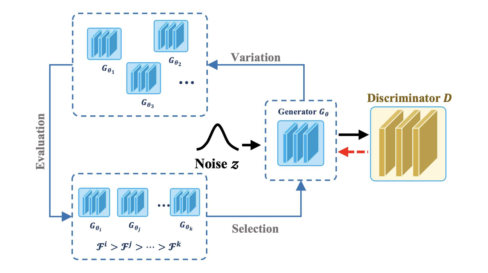
|
Evolutionary Generative Adversarial Networks Chaoyue Wang, Chang Xu, Xin Yao, and Dacheng Tao IEEE TEVC 2019 [PDF] [Code] [Video] (The Best Paper of the Physics arXiv, selected by MIT Technology Review) |
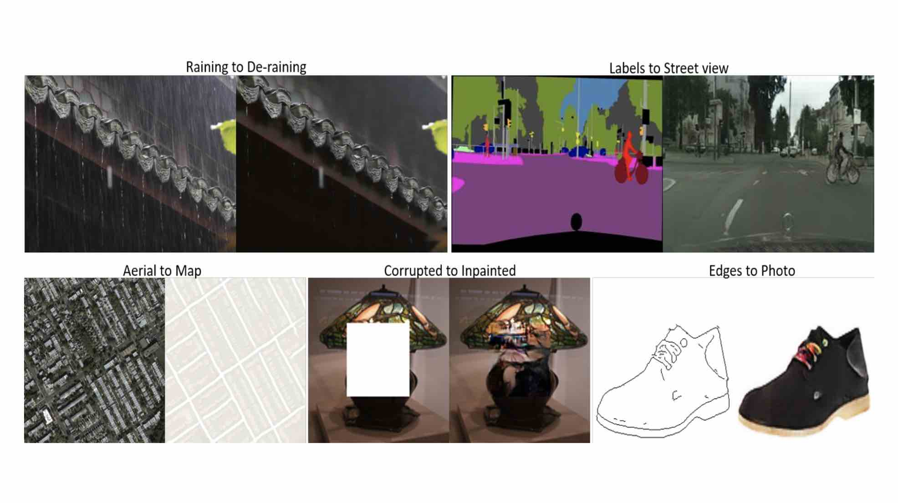
Perceptual Adversarial Networks for Image-to-Image Transformation
Chaoyue Wang, Chang Xu, Chaohui Wang, and Dacheng Tao
IEEE TIP 2018 [PDF] [Code] [Related report]
Chaoyue Wang, Chang Xu, Chaohui Wang, and Dacheng Tao
IEEE TIP 2018 [PDF] [Code] [Related report]
|
Perceptual Adversarial Networks for Image-to-Image Transformation Chaoyue Wang, Chang Xu, Chaohui Wang, and Dacheng Tao IEEE TIP 2018 [PDF] [Code] [Related report] |
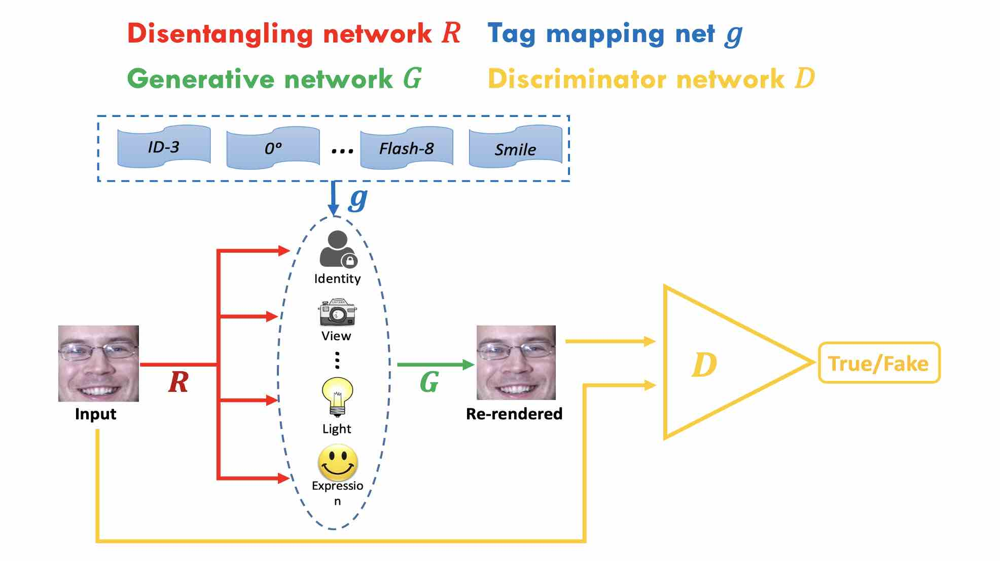
Tag Disentangled Generative Adversarial Network for Object Image Re-rendering
Chaoyue Wang, Chaohui Wang, Chang Xu, and Dacheng Tao
IJCAI 2017 [PDF] [Related report] (Distinguished Student Paper Award, 1 out of 2540)
Chaoyue Wang, Chaohui Wang, Chang Xu, and Dacheng Tao
IJCAI 2017 [PDF] [Related report] (Distinguished Student Paper Award, 1 out of 2540)
|
Tag Disentangled Generative Adversarial Network for Object Image Re-rendering Chaoyue Wang, Chaohui Wang, Chang Xu, and Dacheng Tao IJCAI 2017 [PDF] [Related report] (Distinguished Student Paper Award, 1 out of 2540) |
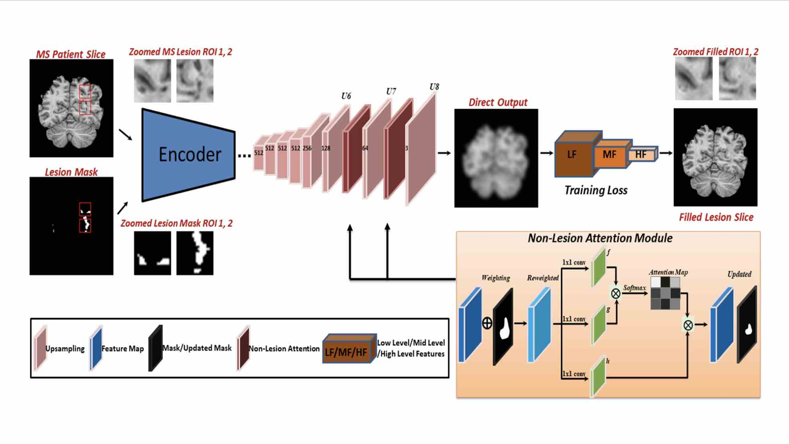
Multiple Sclerosis Lesion Filling using a Non-Lesion Attention based Convolutional Network
Hao Xiong*, Chaoyue Wang*, Michael Barnett and Chenyu Wang
ICONIP 2020 [Paper]
Hao Xiong*, Chaoyue Wang*, Michael Barnett and Chenyu Wang
ICONIP 2020 [Paper]
|
Multiple Sclerosis Lesion Filling using a Non-Lesion Attention based Convolutional Network Hao Xiong*, Chaoyue Wang*, Michael Barnett and Chenyu Wang ICONIP 2020 [Paper] |
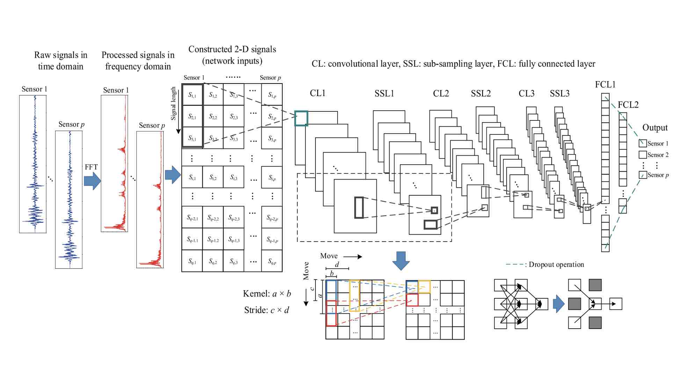
A novel deep learning-based method for damage identification of smart building structures
Yang Yu, Chaoyue Wang, Xiaoyu Gu, and Jianchun Li
Structural Health Monitoring 2019 [Paper]
Yang Yu, Chaoyue Wang, Xiaoyu Gu, and Jianchun Li
Structural Health Monitoring 2019 [Paper]
|
A novel deep learning-based method for damage identification of smart building structures Yang Yu, Chaoyue Wang, Xiaoyu Gu, and Jianchun Li Structural Health Monitoring 2019 [Paper] |